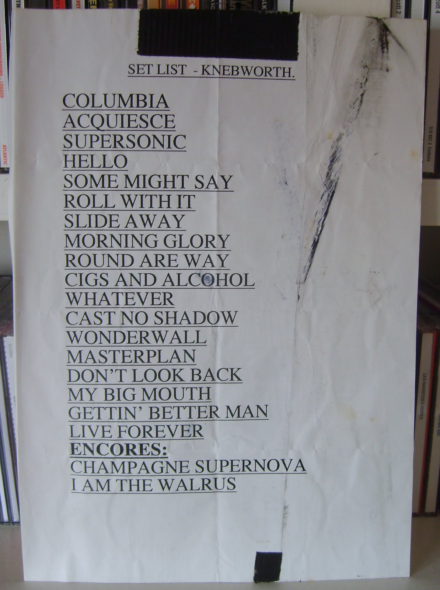

El comienzo de dos noches inolvidables
Los shows se llevaron a cabo el 10 y 11 de agosto de 1996, recibiendo en Knebworth Park a más de 250mil personas ese fin de semana, fanáticos que viajaban desde todas partes de Reino Unido o alrededores sólo para disfrutar de dos noches inolvidables dentro de la historia del rock.
.jpg)
Desde temprano llegaban al predio fanáticos que rápidamente llenaban el lugar. Se podía sentir en el ambiente la camaradería y las intenciones de diversión de cada uno de los presentes, que podían verse reflejados en las canciones de esta banda de Manchester que para muchos eran una voz para aquellos de clase obrera que oían su música.
Para poder armar el escenario para ambos días se necesitaron 3mil personas. En adición a esto, se colocaron alrededor de 11 pantallas y parlantes en varios puntos del predio para que todos los presentes pudieran disfrutar del concierto en todo su esplendor aún estando tan lejos del escenario.
.jpg)
El evento incluso contó con su propia estación de radio: Radio Supernova, que podía sintonizarse en el 106.6 FM en un radio de 32km.
Listen to our Knebworth Soundrop Room featuring the artists from the Knebworth Park lineuphttps://t.co/GmJzgMxEmt pic.twitter.com/8AVsewCHA3
— Oasis (@oasis) August 13, 2014
Junto a Oasis, se presentaron otros artistas y bandas como Ocean Colour Scene, The Prodigy, Cast, The Charlatans y más. Además, John Squire, guitarrista de The Stone Roses, sirvió de invitado durante Champagne Supernova y I Am the Walrus en ambos días. Se estima también que hubieron 7mil personas en la lista de invitados, entre los que se hallaban la modelo Kate Moss y Mick Hucknall, vocalista de la banda Simply Red.
.jpg)
10 de agosto
La banda llegó a Knebworth en un helicóptero, listos para tocar. En la primera noche, The Prodigy se adueñó del público con su presentación antes del show principal. Fue cuestión de tan solo 45 minutos hasta que se escuchó The Swamp Song en todo el predio, mientras en las pantallas se observaban el logo de Oasis e imágenes del backstage: la banda observaba desde allí cómo el público se preparaba para recibirlos. Apenas terminó la canción, salieron al escenario. Liam saludó al público parodiando la canción Parklife de Blur: "All the people, so many people", a lo que Noel siguió cantando "Sad life!".Luego, empezaron con la primera canción de la noche: Columbia.
Liam dedicó el tema Cast No Shadow a Rob Collins, tecladista de The Charlatans que había fallecido tres semanas antes en un accidente automovilístico.
Antes del encore la banda presentó dos canciones que formarían parte de su tercer álbum Be Here Now: My Big Mouth y It's Gettin' Better (Man!!).
Durante el encore sorprendió con su presencia el guitarrista de The Stone Roses John Squire, quien acompañó durante las últimas dos canciones del show junto a su guitarra.
.webp)
.jpg)
11 de agosto
El día inició con lluvia pero eso no fue ningún impedimento para llevar a cabo el concierto. Antes del show principal de Oasis, Manic Street Preachers se presentó por segunda noche consecutiva en Knebworth.
.jpg)
Al aparecer en el escenario, esta vez Noel dijo ante el público "This is history, right here, right now, this is history" (Esto es historia, aquí y ahora, esto es historia) a lo que Liam respondió "I thought it was Knebworth" (Pensé que esto era Knebworth). Luego, continuaron tocando Columbia, la primera canción de la noche.
En este segundo show, volvieron a presentarse dos canciones del tercer álbum Be Here Now. A su vez, Noel Gallagher dedicó nuevamente la canción Cast No Shadow, esta vez dirigiéndose a Richard Ashcroft, cantante de The Verve. Y, para cerrar la noche, John Squire deleitó con su solo de guitarra.
.jpg)
.webp)
Teloneros
10 de agosto
11 de agosto
Setlist
ENCORE


{kind=link}